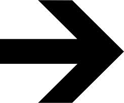
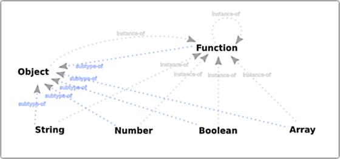
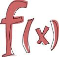
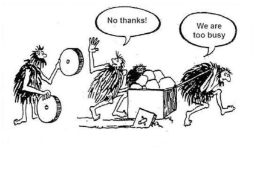
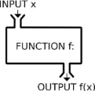

Functional Javascript Design Patterns

Functional Javascript Design Patterns

@djidja8
1. JavaScript Overview

Type System
Primitive Values
Objects
Inheritance
Functions
Closures
1. JavaScript Overview - Type System
Javascript has dynamic and loosely typed type system with two main types:
Primitive (value) types:
number
string
boolean
null
undefined
Object (reference) types:
Object
Function
Array
Date
RegExp
*Wrappers for primitives: Boolean, Number, String
1. JavaScript Overview - Type System
Javascript Type Model

@vijayan blog: JavaScript Type Model
1. JavaScript Overview - Type System
Guess what will the result be?
more samples...
1. JavaScript Overview - Primitive Values
A data types that are not an objects and do not have any methods.
Immutable
Compared by value, they don’t have individual identities
Wrapper objects
1. JavaScript Overview - Objects
JavaScript objects can be thought of as simple collections of name-value pairs, similar to dictionaries
1. JavaScript Overview - Objects
Mutable by default
Have unique identities and are compared by reference
Variables hold references to objects
1. JavaScript Overview - Inheritance
JavaScript supports a prototype-based inheritance.
Inheritance is performed by creating new objects directly, based on existing ones, existing object is assigned
as the prototype of the new object and then inherited behavior can be changed or new behavior can be added to the
new object.
The prototype of an object is a simple reference to another object which has its own prototype reference set to yet another object
All objects are descended from 'Object' and they inherit properties from Object.prototype, but they may be overridden
'null', by definition, has no prototype, and acts as the final link in this prototype chain
New objects are created by copying the structure of an existing prototype object
 Inheritance in JavaScript
Inheritance in JavaScript
1. JavaScript Overview - Inheritance example
Using the new operator
1. JavaScript Overview - Inheritance example
Object.create as an alternative to the new operator
1. JavaScript Overview - Functions
In JavaScript, functions are objects and are used to perform a task or calculates a value.
Functions have properties and methods that they inherit from the Function object. It is possible to add new properties and methods to functions.
Functions are values that can be bound to names, passed as arguments, returned from other functions
Functions are applied to arguments
The arguments are passed by sharing, which is also called “pass by value”
Function bodies have zero or more expressions
Function application evaluates whatever is returned with the return keyword, or to 'undefined'
Function application creates a scope. Scopes are nested and free variable references are closed over
Variables can shadow variables in an enclosing scope
1. JavaScript Overview - Functions
Function declarations *they are hoisted — moved in their entirety to the beginning of the current scope)
With name:
Without the name, assigned to a variable
Without the name, used as anonymous function
1. JavaScript Overview - Functions
Function object (all functions inherit from it) has the following properties:
arguments: An Array/object containing the arguments passed to the function
arguments.length: Stores the number of arguments in the array
arguments.callee: Pointer to the executing function (allows anonymous functions to recurse)
length: The number of arguments the function was expecting
constructor: function pointer to the constructor function
prototype: allows the creation of prototypes
Function object has the following methods:
apply: A method that lets you more easily pass function arguments
call: Allows you to call a function within a different context
bind: creates a new function that, when called, has its 'this' set to the provided value, with a given sequence of arguments preceding any provided when the new function is called
toString: Returns the source of the function as a string
1. JavaScript Overview - Functions
Function properties:
1. JavaScript Overview - Closures
Closures are functions that refer to independent (free) variables.
Function defined in the closure 'remembers' the environment in which it was created. A closure, unlike a plain function pointer, allows a function to access those free variables even when invoked outside its immediate lexical scope.
Simply accessing variables outside of your immediate lexical scope creates a closure
Inner function get full access to all the values defined in the outer function, not the other way around
1. JavaScript Overview - Closures
Closures enable data hiding and encapsulation
1. JavaScript Overview - Questions
Type System
Primitive Values
Objects
Inheritance
Functions
Closures
2. Functional Programming Overview
What is functional programming?
Why Functional?
A motivating example(?)

2. Functional Programming Overview - What is functional programming
-
First Class Functions:
stored in variables, passed as arguments to functions, created within functions and returned from functions
-
Higher Order Functions:
a function that can accept functions as arguments, and/or can return a function
-
No Side Effects:
Function that does something other than returning the result is said to have side effects
-
Referential Transparency:
For a given set of arguments, the same code should always output the same value, only by changing arguments can a output value be different
-
Immutability:
Inability for variables to change their values once created. In other words, all things created stay constant
-
Currying / Partial Application:
Ability of a function to return a new function until it receives all it's arguments. Calling a curried function with only some of its arguments is called partial application
-
Tail Call Optimization:
Ability to avoid allocating a new stack frame for a function call. The most common use is tail-recursion, where a recursive function uses constant stack space.
2. Functional Programming Overview - Why Functional?
"Functional programming isn't the goal. The goal is to simplify the complicated."
Write less code
Fewer errors
Easy concurrency
Testability
2. Functional Programming Overview - Why Functional?
... but who has time to learn new stuff (all the time)?

2. Functional Programming Overview - Motivating example? *
First attempt: old school, procedural programming approach
*Hat tip to Brian Lonsdorf, aka @drboolean. Watch his videos, great fun and motivating stuff!
Hey Underscore, You're Doing It Wrong!
Functional programming patterns for the non-mathematician!
2. Functional Programming Overview - Motivating example?
Second attempt: using underscore, better but...
2. Functional Programming Overview - Motivating example?
Third attempt: using functional all the way...
2. Functional Programming Overview - Questions
What is functional programming?
Why Functional?
A motivating example(?)
3. Functional Programming Techniques
Functional JavaScript
Pure Function, Higher Order Functions
Composition, Combinators
Currying/Partial Application
Filter, Map, Reduce
Try it out yourself...
3. Functional Programming Techniques - Functional JavaScript
JavaScript allows a variety of different programming paradigms: OO, functional, procedural
Although not a pure functional programming language, it allows one to program in a functional way.
Supports:
First Class Functions
Higher Order Functions
Anonymous functions
Closuress
3. Functional Programming Techniques - Functional JavaScript
JavaScript allows a variety of different programming paradigms: OO, functional, procedural
Although not a pure functional programming language, it allows one to program in a functional way.
Does not support directly, but possible with some discipline :)
Pure functions
Immutability
No Side Effects
3. Functional Programming Techniques - Functional JavaScript
JavaScript allows a variety of different programming paradigms: OO, functional, procedural
Although not a pure functional programming language, it allows one to program in a functional way.
Does not support directly, but possible with use of libraries or with ES6:
Currying/Partial Application
Tail call optimization
Pattern matching
Lazy Evaluation
3. Functional Programming Techniques - Pure function
A function is considered pure if the result depends only on the arguments, and it has no side effects
The only result of invoking a pure function is the return value.
Same input, same ouput
No side effects
Can be cached
Easy to test
Allows code to run in parallel

3. Functional Programming Techniques - Pure function
A function is considered pure if the result depends only on the arguments, and it has no side effects
The only result of invoking a pure function is the return value.
3. Functional Programming Techniques - Higher Order Functions
Functions that work with functions, take them as arguments, and/or return them as result.
Used in callbacks, factories, ... Basic ingridient for function composition.
Using functions as arguments:
Using functions as return value:
3. Functional Programming Techniques - Composition
Function Composition is ability to use the output from one function call as the input to another
3. Functional Programming Techniques - Combinators
Ability to use functions as building blocks to make new functions
Function composition is simply one of many combinators.
Tacit programming (point-free programming) is a programming paradigm in which a function definition does not include information regarding its arguments, using combinators and composition in the function declaration instead of arguments
Some Examples*:
Be sure to check out his projects and books!
3. Functional Programming Techniques - Combinators
'splat' combinator:
Function that wraps around 'map' and turns any other function into a mapping capable function
3. Functional Programming Techniques - Combinators
'get' combinator:
Takes the name of a property and returns a function that gets that property from an object
3. Functional Programming Techniques - Combinators
'pluck' combinator:
Formalizes combining 'get' and 'splat'
3. Functional Programming Techniques - Currying/Partial Application*
Currying produces a function that will return a new function until it receives all it's arguments
Currying enables Partial Application, and together they help:
Making generic functions
Building new functions by applying arguments
Better granularity of functions
More powerful function composition
3. Functional Programming Techniques - Example: Filter
The filter method transforms an array by applying a predicate function to all of its elements, and building a new array from the elements for which predicate returned true.
3. Functional Programming Techniques - Example: Map
Map takes a function as an argument, and applies it to each of the elements of the array, then returns the results in a new array
3. Functional Programming Techniques - Example: Reduce (Fold)
Reduce applies a function against an accumulator and each value of the array (from left-to-right) to reduce it to a single value
3. Functional Programming Techniques - Questions
JavaScript as functional a proggraming language
Pure Function
Higher Order Functions
Composition, Combinators
Currying/Partial Application
Filter, Map, Reduce
Try it out yourslef...
Resources
Original Deck/CodeMirror plugin by Irene Ros: deck.js-codemirror
Javascript Functional (and not so functional*) programming libraries:
Books on Functional JavaScript
/